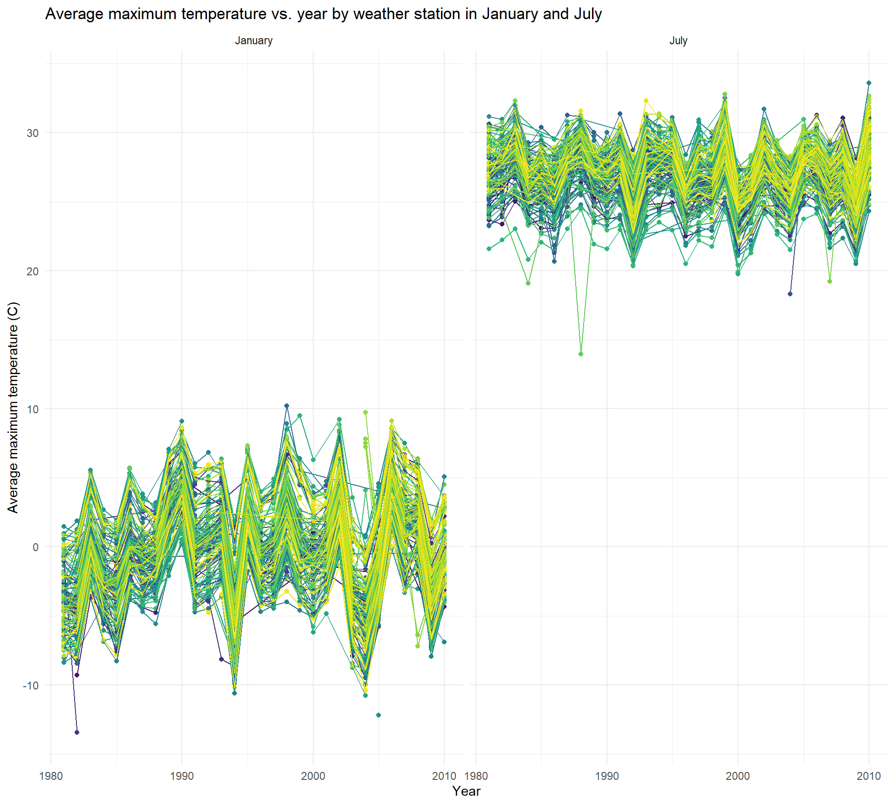
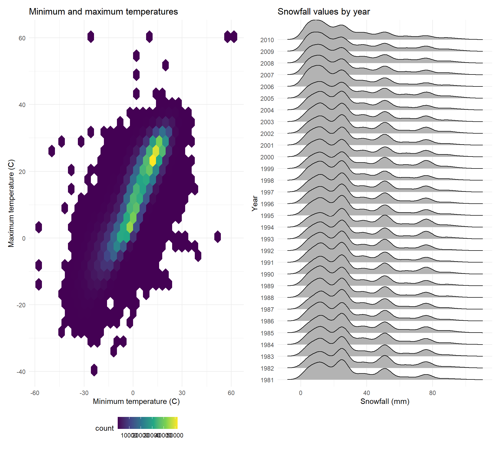
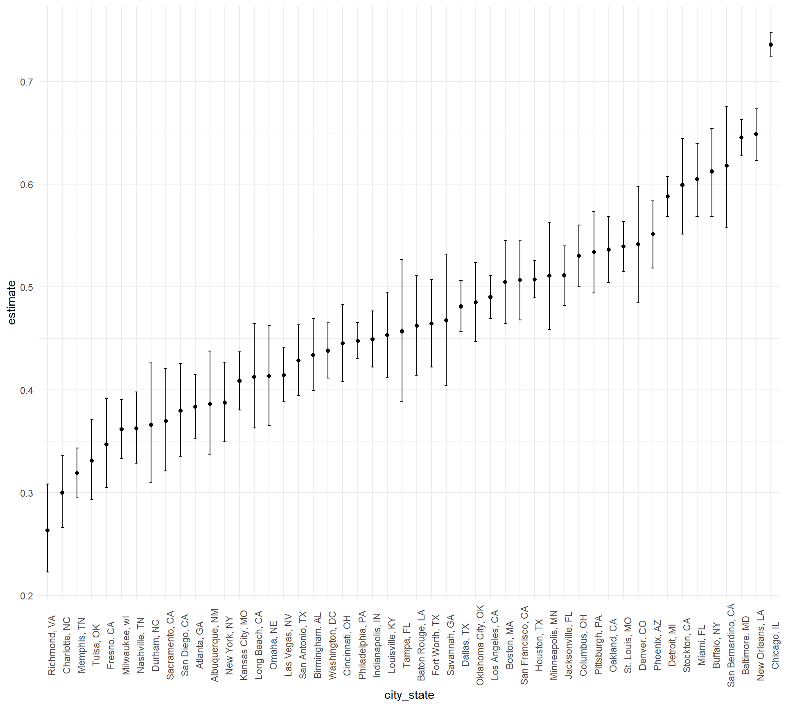

We’ll start by having a code chunk in the beginning that loads all the packages we will need and set up formatting for visualizations:
library(tidyverse)## ── Attaching packages ─────────────────────────────────────── tidyverse 1.3.2 ──
## ✔ ggplot2 3.4.1 ✔ purrr 1.0.1
## ✔ tibble 3.1.8 ✔ dplyr 1.0.10
## ✔ tidyr 1.3.0 ✔ stringr 1.5.0
## ✔ readr 2.1.3 ✔ forcats 0.5.2
## ── Conflicts ────────────────────────────────────────── tidyverse_conflicts() ──
## ✖ dplyr::filter() masks stats::filter()
## ✖ dplyr::lag() masks stats::lag()library(readxl)
library(p8105.datasets)
library(hexbin)
library(ggridges)
library(patchwork)
library(mgcv)## Loading required package: nlme
##
## Attaching package: 'nlme'
##
## The following object is masked from 'package:dplyr':
##
## collapse
##
## This is mgcv 1.8-41. For overview type 'help("mgcv-package")'.library(modelr)
library(viridis)## Loading required package: viridisLiteknitr::opts_chunk$set(
echo = TRUE,
warning = FALSE,
fig.width = 8,
fig.height = 6,
out.width = "90%"
)
theme_set(theme_minimal() + theme(legend.position = "bottom"))
options(
ggplot2.continuous.colour = "viridis",
ggplot2.continuous.fill = "viridis"
)
scale_colour_discrete = scale_colour_viridis_d
scale_fill_discrete = scale_fill_viridis_dThis dataset contains information related to each entrance and exit for each subway station in NYC.
We will start by reading in the datafile using the readr
function from the tidyverse package and cleaning the data
by using the clean_names function from the
janitor package. We will also retain certain variables and
convert the entry variable from a character variable to a logical
variable.
subway = read_csv("./data/Subway.csv") %>%
janitor::clean_names() %>%
select(line, station_name, station_latitude, station_longitude,
starts_with("route"), entry, exit_only, vending, entrance_type, ada) %>%
mutate(entry = ifelse(entry == "YES", TRUE, FALSE)) %>%
mutate(route8 = as.character(route8)) %>%
mutate(route9 = as.character(route9)) %>%
mutate(route10 = as.character(route10)) %>%
mutate(route11 = as.character(route11)) ## Rows: 1868 Columns: 32
## ── Column specification ────────────────────────────────────────────────────────
## Delimiter: ","
## chr (22): Division, Line, Station Name, Route1, Route2, Route3, Route4, Rout...
## dbl (8): Station Latitude, Station Longitude, Route8, Route9, Route10, Rout...
## lgl (2): ADA, Free Crossover
##
## ℹ Use `spec()` to retrieve the full column specification for this data.
## ℹ Specify the column types or set `show_col_types = FALSE` to quiet this message.subway## # A tibble: 1,868 × 20
## line station_…¹ stati…² stati…³ route1 route2 route3 route4 route5 route6
## <chr> <chr> <dbl> <dbl> <chr> <chr> <chr> <chr> <chr> <chr>
## 1 4 Avenue 25th St 40.7 -74.0 R <NA> <NA> <NA> <NA> <NA>
## 2 4 Avenue 25th St 40.7 -74.0 R <NA> <NA> <NA> <NA> <NA>
## 3 4 Avenue 36th St 40.7 -74.0 N R <NA> <NA> <NA> <NA>
## 4 4 Avenue 36th St 40.7 -74.0 N R <NA> <NA> <NA> <NA>
## 5 4 Avenue 36th St 40.7 -74.0 N R <NA> <NA> <NA> <NA>
## 6 4 Avenue 45th St 40.6 -74.0 R <NA> <NA> <NA> <NA> <NA>
## 7 4 Avenue 45th St 40.6 -74.0 R <NA> <NA> <NA> <NA> <NA>
## 8 4 Avenue 45th St 40.6 -74.0 R <NA> <NA> <NA> <NA> <NA>
## 9 4 Avenue 45th St 40.6 -74.0 R <NA> <NA> <NA> <NA> <NA>
## 10 4 Avenue 53rd St 40.6 -74.0 R <NA> <NA> <NA> <NA> <NA>
## # … with 1,858 more rows, 10 more variables: route7 <chr>, route8 <chr>,
## # route9 <chr>, route10 <chr>, route11 <chr>, entry <lgl>, exit_only <chr>,
## # vending <chr>, entrance_type <chr>, ada <lgl>, and abbreviated variable
## # names ¹station_name, ²station_latitude, ³station_longitudeThis dataset contains 20 columns and 1868 rows It has the 20
variables that we selected it to keep. We imported the file, used the
clean_names function to do a quick clean. Then we selected
what variables we wanted to keep. Some of the route variables were in
dbl format instead of chr like most of the
route variables so we changed that. And lastly we turned the entry
variable from character into a logical variable.
This data is not tidy because the route variables should be converted from a wide to long format.
We can use the following code to find the number of distinct stations:
subway %>%
select(station_name, line) %>%
distinct## # A tibble: 465 × 2
## station_name line
## <chr> <chr>
## 1 25th St 4 Avenue
## 2 36th St 4 Avenue
## 3 45th St 4 Avenue
## 4 53rd St 4 Avenue
## 5 59th St 4 Avenue
## 6 77th St 4 Avenue
## 7 86th St 4 Avenue
## 8 95th St 4 Avenue
## 9 9th St 4 Avenue
## 10 Atlantic Av-Barclays Ctr 4 Avenue
## # … with 455 more rowsThere are 465 distinct stations.
We can use the following code to find the number of ADA compliant stations:
subway %>%
filter(ada == TRUE) %>%
select(station_name, line) %>%
distinct## # A tibble: 84 × 2
## station_name line
## <chr> <chr>
## 1 Atlantic Av-Barclays Ctr 4 Avenue
## 2 DeKalb Av 4 Avenue
## 3 Pacific St 4 Avenue
## 4 Grand Central 42nd St Shuttle
## 5 34th St 6 Avenue
## 6 47-50th Sts Rockefeller Center 6 Avenue
## 7 Church Av 6 Avenue
## 8 21st St 63rd Street
## 9 Lexington Av 63rd Street
## 10 Roosevelt Island 63rd Street
## # … with 74 more rowsThere are 84 ADA compliant stations.
We can use the following code to find the proportion of station entrances/exits without vending allow entrance:
subway %>%
filter(vending == "NO") %>%
pull(entry) %>%
mean## [1] 0.3770492The proportion is 0.377.
We can use the following code to find how many stations serve the A train and of the stations that serve the A train, how many are ADA compliant:
subway %>%
pivot_longer(
route1:route11,
names_to = "route_num",
values_to = "route") %>%
filter(route == "A") %>%
select(station_name, line) %>%
distinct## # A tibble: 60 × 2
## station_name line
## <chr> <chr>
## 1 Times Square 42nd St Shuttle
## 2 125th St 8 Avenue
## 3 145th St 8 Avenue
## 4 14th St 8 Avenue
## 5 168th St - Washington Heights 8 Avenue
## 6 175th St 8 Avenue
## 7 181st St 8 Avenue
## 8 190th St 8 Avenue
## 9 34th St 8 Avenue
## 10 42nd St 8 Avenue
## # … with 50 more rowssubway %>%
pivot_longer(
route1:route11,
names_to = "route_num",
values_to = "route") %>%
filter(route == "A", ada == TRUE) %>%
select(station_name, line) %>%
distinct## # A tibble: 17 × 2
## station_name line
## <chr> <chr>
## 1 14th St 8 Avenue
## 2 168th St - Washington Heights 8 Avenue
## 3 175th St 8 Avenue
## 4 34th St 8 Avenue
## 5 42nd St 8 Avenue
## 6 59th St 8 Avenue
## 7 Inwood - 207th St 8 Avenue
## 8 West 4th St 8 Avenue
## 9 World Trade Center 8 Avenue
## 10 Times Square-42nd St Broadway
## 11 59th St-Columbus Circle Broadway-7th Ave
## 12 Times Square Broadway-7th Ave
## 13 8th Av Canarsie
## 14 Franklin Av Franklin
## 15 Euclid Av Fulton
## 16 Franklin Av Fulton
## 17 Howard Beach RockawayThere are 60 stations that serve the A train and of those, 17 are ADA compliant.
Let’s start by reading and cleaning the Mr. Trash Wheel and Professor Trash Wheel datasets.
Make sure to import the correct sheet from the Excel file:
trash = read_excel("./data/Trash_Wheel.xlsx", sheet = "Mr. Trash Wheel", range = "A2:N549") %>%
janitor::clean_names() %>%
drop_na(dumpster) %>%
mutate(sports_balls = as.integer(round(sports_balls))) %>%
mutate(ID = "A")professor = read_excel("./data/Trash_Wheel.xlsx", sheet = "Professor Trash Wheel", range = "A2:M96") %>%
janitor::clean_names() %>%
drop_na(dumpster) %>%
mutate(ID = "B")Next we will combine both datasets into one dataset.
combo = merge(x = trash, y = professor, all = TRUE) %>%
select(ID, everything())The new and combined dataset is a full merge and has 641 observations
(nrow(combo)) and 15 variables (ncol(combo)).
All the variables exist in both sets except for the
sports_balls variable; it came from the trash
dataset. We can distinguish which observation is from which dataset by
the ID variable; an ID value equal to A is for the
trash dataset and an ID value of B is for the
professor dataset.
To find the total weight of trash collected by Professor Trash Wheel,
we can use the following code:
sum(subset(combo, ID == "B")$weight_tons), which gives us
the sum of the weight_tons variable restricted to the
observations from the Professor dataset, identified by
ID = B. The answer is 190.12 tons.
To find the total number of sports balls collected by Mr. Trash Wheel
in 2020, we can use the following code:
sum(subset(combo, ID == "A" & year == "2020")$sports_balls),
which gives us the sum of the sports_balls variable restricted
to the observations from the Trash dataset, identified
by ID = A, and only in the year 2020. The answer is 856 sports
balls.
Clean up the pols-month file:
pols = read_csv("./data/fivethirtyeight_datasets/pols-month.csv") %>%
janitor::clean_names() %>%
separate(mon, sep = "-", into = c("year", "month", "day")) %>%
mutate(month = month.name[as.numeric(month)]) %>%
mutate(year = as.numeric(year)) %>%
mutate(month = factor(month, levels = month.name)) %>%
mutate(president = case_when(prez_gop == 1 ~ "gop", TRUE ~ "dem")) %>%
select(-day, -prez_gop, -prez_dem) %>%
arrange(year, month)## Rows: 822 Columns: 9
## ── Column specification ────────────────────────────────────────────────────────
## Delimiter: ","
## dbl (8): prez_gop, gov_gop, sen_gop, rep_gop, prez_dem, gov_dem, sen_dem, r...
## date (1): mon
##
## ℹ Use `spec()` to retrieve the full column specification for this data.
## ℹ Specify the column types or set `show_col_types = FALSE` to quiet this message.Clean up the snp file:
snp = read_csv("./data/fivethirtyeight_datasets/snp.csv") %>%
janitor::clean_names() %>%
separate(date, sep = "/", into = c("month", "day", "year")) %>%
mutate(month = month.name[as.numeric(month)]) %>%
mutate(century = case_when(year < 16 ~ 2000, TRUE ~ 1900)) %>%
mutate(year = as.numeric(year)) %>%
mutate(year = year + century) %>%
select(year, month, close) %>%
mutate(month = factor(month, levels = month.name)) %>%
arrange(year, month) ## Rows: 787 Columns: 2
## ── Column specification ────────────────────────────────────────────────────────
## Delimiter: ","
## chr (1): date
## dbl (1): close
##
## ℹ Use `spec()` to retrieve the full column specification for this data.
## ℹ Specify the column types or set `show_col_types = FALSE` to quiet this message.Now tidy the unemployment file:
unemploy = read_csv("./data/fivethirtyeight_datasets/unemployment.csv") %>%
janitor::clean_names() %>%
pivot_longer(
jan:dec,
names_to = "month",
values_to = "percent_unemploy") %>%
mutate(month = as.factor(month)) %>%
mutate(month = month.name[as.numeric(month)]) %>%
mutate(month = as.factor(month)) %>%
mutate(month = factor(month, levels = month.name)) %>%
arrange(year, month)## Rows: 68 Columns: 13
## ── Column specification ────────────────────────────────────────────────────────
## Delimiter: ","
## dbl (13): Year, Jan, Feb, Mar, Apr, May, Jun, Jul, Aug, Sep, Oct, Nov, Dec
##
## ℹ Use `spec()` to retrieve the full column specification for this data.
## ℹ Specify the column types or set `show_col_types = FALSE` to quiet this message.Now we will create a merged dataset in 2 steps.
First we will merge snp into pols:
first = left_join(pols, snp, by = c("year", "month"))Then we will merge the unemploy file into this new
merged first file:
total = left_join(first, unemploy, by = c("year", "month"))The snp dataset has just 3 variables: the
close variable, which was untouched, and then month
and year that we created by separating the date. The
pols dataset has the same month and
year that we made like in the snp dataset. It
also has many of the original variables, as well as a new variable
called president which was created logically based off the
prez_dem and prez_gop variables. The
unemploy dataset has also 3 variables, with the
month and year variables made by separating the date
and the percent_unemploy variable made by the
pivot_longer function.
The final dataset total has 822 observations
(nrow(total) and 11 variables (ncol(total). We
can find the range of years with the following code:
range(total$year), which is from 1947 to 2015. The key
variables are year and month which was present in all
3 datafiles and was used to perform all the merges.
Let’s load the data:
data("ny_noaa")
ny_noaa## # A tibble: 2,595,176 × 7
## id date prcp snow snwd tmax tmin
## <chr> <date> <int> <int> <int> <chr> <chr>
## 1 US1NYAB0001 2007-11-01 NA NA NA <NA> <NA>
## 2 US1NYAB0001 2007-11-02 NA NA NA <NA> <NA>
## 3 US1NYAB0001 2007-11-03 NA NA NA <NA> <NA>
## 4 US1NYAB0001 2007-11-04 NA NA NA <NA> <NA>
## 5 US1NYAB0001 2007-11-05 NA NA NA <NA> <NA>
## 6 US1NYAB0001 2007-11-06 NA NA NA <NA> <NA>
## 7 US1NYAB0001 2007-11-07 NA NA NA <NA> <NA>
## 8 US1NYAB0001 2007-11-08 NA NA NA <NA> <NA>
## 9 US1NYAB0001 2007-11-09 NA NA NA <NA> <NA>
## 10 US1NYAB0001 2007-11-10 NA NA NA <NA> <NA>
## # … with 2,595,166 more rowsThe dataset has 7 variables (ncol(ny_noaa)) and
2,595,176 observations (nrow(ny_noaa)). It has a
combination of integer and character variables, with also a date
variable. The variables that make up the dataset are an ID variable of
the weather station, date of observation, precipitation (mm), snowfall
(mm), snow depth (mm), and the maximum and minimum temperatures in
Celsius. There is a large number of missing data because each weather
station may collect only a subset of these variables, so the dataset has
observations with missing data.
Let’s now do some data cleaning of this dataset:
ny_noaa_clean <- ny_noaa %>%
janitor::clean_names() %>%
separate(date, sep = "-", into = c("year", "month", "day")) %>%
mutate_at(c(2:9), as.numeric) %>%
mutate(prcp = prcp/10) %>%
mutate(tmin = tmin/10, tmax = tmax/10) %>%
mutate(month = month.name[as.numeric(month)])
ny_noaa_clean## # A tibble: 2,595,176 × 9
## id year month day prcp snow snwd tmax tmin
## <chr> <dbl> <chr> <dbl> <dbl> <dbl> <dbl> <dbl> <dbl>
## 1 US1NYAB0001 2007 November 1 NA NA NA NA NA
## 2 US1NYAB0001 2007 November 2 NA NA NA NA NA
## 3 US1NYAB0001 2007 November 3 NA NA NA NA NA
## 4 US1NYAB0001 2007 November 4 NA NA NA NA NA
## 5 US1NYAB0001 2007 November 5 NA NA NA NA NA
## 6 US1NYAB0001 2007 November 6 NA NA NA NA NA
## 7 US1NYAB0001 2007 November 7 NA NA NA NA NA
## 8 US1NYAB0001 2007 November 8 NA NA NA NA NA
## 9 US1NYAB0001 2007 November 9 NA NA NA NA NA
## 10 US1NYAB0001 2007 November 10 NA NA NA NA NA
## # … with 2,595,166 more rowsWe cleaned up the data by cleaning the names, separating the variable
for date of observation into the year, month, and day, converting all
the variables except the ID into a numeric variable, and converting the
prcp, tmix, and tmax variables
from it’s tenths value to it’s whole value by dividing by 10.
Now let’s make a two-panel plot showing the average max temperature in January and in July in each station across years.
avgtmax <- ny_noaa_clean %>%
filter(
month %in% c("January", "July")
) %>%
drop_na(tmax) %>%
group_by(year, id, month) %>%
summarize(
avg_tmax = mean(tmax, na.rm = TRUE)
) ## `summarise()` has grouped output by 'year', 'id'. You can override using the
## `.groups` argument.ggplot(avgtmax, (aes(x = year, y = avg_tmax, color = id))) +
geom_point() +
geom_line() +
labs(
title = "Average maximum temperature vs. year by weather station in January and July",
x = "Year",
y = "Average maximum temperature (C)"
) +
facet_grid(. ~ month) +
theme(legend.position = "none")
The overall trends in these graphs are that in January, the average maximum temperature from 1980 to 2010 was between -10 and 10 degrees Celsius. We have a few outliers at about 11, -9, -13, and -12. In July, the average maximum temperature from 1980 to 2010 was between 20 and 35 degrees Celsius. Some of the outliers were 14, 18, 19, and 36.
Now let’s make a two-panel plot showing (i) tmax vs tmin for the full dataset and (ii) the distribution of snowfall values greater than 0 and less than 100 separately by year
temp_plot =
ny_noaa_clean %>%
ggplot(aes(x = tmin, y = tmax)) +
geom_hex() +
labs(
title = "Minimum and maximum temperatures",
x = "Minimum temperature (C)",
y = "Maximum temperature (C)"
)
snow <- ny_noaa_clean %>%
filter(snow > 0 & snow < 100) %>%
mutate(snow = as.numeric(snow)) %>%
mutate(year = as.factor(year))
snow_plot =
ggplot(snow, aes(x = snow, y = year)) +
geom_density_ridges() +
labs(
title = "Snowfall values by year",
x = "Snowfall (mm)",
y = "Year"
)
temp_plot + snow_plot## Picking joint bandwidth of 3.76
In these plots, we see that there is large number of days in which the maximum temperature and minimum temperatures were between 15 for tmin and 30 for tmax and -15 for tmin and -5 for tmax. For the snowfall plot, from 1981 to 2010, most of the days with snowfall have a value between 0 and 30 mm. There is also another large set of days that had snowfall values between 40 and 60 mm and another between 70 and 80 mm.
The Washington Post has gathered data on homicides in 50 large U.S. cities and that is the data used in this analysis.
homicides = read.csv("./data/homicide-data.csv")The raw dataset homicides contains 12 variables and
52179 observations. It describes information on homicides from 50 large
US cities. Variables of interest include the case ID, the date of the
incident, information on the victim (name, race, age and sex),
information on the location of the homicide, and the disposition of the
case.
We will create a new variable city_state.
new_homi <- homicides %>%
unite("city_state", city:state, sep = ", ", remove = FALSE)We will first look at the total number of homicides in a city and then at the number of homicides that are unsolved in a city.
new_homi %>%
group_by(city) %>%
summarize(count = n()) %>%
knitr::kable(digits = 1)| city | count |
|---|---|
| Albuquerque | 378 |
| Atlanta | 973 |
| Baltimore | 2827 |
| Baton Rouge | 424 |
| Birmingham | 800 |
| Boston | 614 |
| Buffalo | 521 |
| Charlotte | 687 |
| Chicago | 5535 |
| Cincinnati | 694 |
| Columbus | 1084 |
| Dallas | 1567 |
| Denver | 312 |
| Detroit | 2519 |
| Durham | 276 |
| Fort Worth | 549 |
| Fresno | 487 |
| Houston | 2942 |
| Indianapolis | 1322 |
| Jacksonville | 1168 |
| Kansas City | 1190 |
| Las Vegas | 1381 |
| Long Beach | 378 |
| Los Angeles | 2257 |
| Louisville | 576 |
| Memphis | 1514 |
| Miami | 744 |
| Milwaukee | 1115 |
| Minneapolis | 366 |
| Nashville | 767 |
| New Orleans | 1434 |
| New York | 627 |
| Oakland | 947 |
| Oklahoma City | 672 |
| Omaha | 409 |
| Philadelphia | 3037 |
| Phoenix | 914 |
| Pittsburgh | 631 |
| Richmond | 429 |
| Sacramento | 376 |
| San Antonio | 833 |
| San Bernardino | 275 |
| San Diego | 461 |
| San Francisco | 663 |
| Savannah | 246 |
| St. Louis | 1677 |
| Stockton | 444 |
| Tampa | 208 |
| Tulsa | 584 |
| Washington | 1345 |
new_homi %>%
filter(disposition %in% c("Closed without arrest", "Open/No arrest")) %>%
group_by(city) %>%
summarize(count = n()) %>%
knitr::kable(digits = 1)| city | count |
|---|---|
| Albuquerque | 146 |
| Atlanta | 373 |
| Baltimore | 1825 |
| Baton Rouge | 196 |
| Birmingham | 347 |
| Boston | 310 |
| Buffalo | 319 |
| Charlotte | 206 |
| Chicago | 4073 |
| Cincinnati | 309 |
| Columbus | 575 |
| Dallas | 754 |
| Denver | 169 |
| Detroit | 1482 |
| Durham | 101 |
| Fort Worth | 255 |
| Fresno | 169 |
| Houston | 1493 |
| Indianapolis | 594 |
| Jacksonville | 597 |
| Kansas City | 486 |
| Las Vegas | 572 |
| Long Beach | 156 |
| Los Angeles | 1106 |
| Louisville | 261 |
| Memphis | 483 |
| Miami | 450 |
| Milwaukee | 403 |
| Minneapolis | 187 |
| Nashville | 278 |
| New Orleans | 930 |
| New York | 243 |
| Oakland | 508 |
| Oklahoma City | 326 |
| Omaha | 169 |
| Philadelphia | 1360 |
| Phoenix | 504 |
| Pittsburgh | 337 |
| Richmond | 113 |
| Sacramento | 139 |
| San Antonio | 357 |
| San Bernardino | 170 |
| San Diego | 175 |
| San Francisco | 336 |
| Savannah | 115 |
| St. Louis | 905 |
| Stockton | 266 |
| Tampa | 95 |
| Tulsa | 193 |
| Washington | 589 |
Let’s focus on crime in just Baltimore, MD:
new_homi %>%
filter(city_state == "Baltimore, MD") %>%
summarize(count = n())## count
## 1 2827new_homi %>%
filter(city_state == "Baltimore, MD") %>%
filter(disposition %in% c("Closed without arrest", "Open/No arrest")) %>%
summarize(count = n())## count
## 1 1825From the above code, we see that in the city of Baltimore, MD, there were a total of 2827 homicides and of those homicides, 1825 were unsolved.
Let’s use the prop.test function on just Baltimore, MD
to estimate the proportion of homicides that are unsolved and its
confidence interval.
Balt_test <- prop.test(1825, 2827) %>%
broom::tidy() %>%
select(estimate, starts_with("conf"))The proportion of homicides that are unsolved is 0.646 with a confidence interval of 0.628 and 0.663.
Now we will create a function to do this for all the cities in the dataset:
homi_nest =
new_homi %>%
relocate(city_state) %>%
nest(data = uid:disposition)
prop = function(df) {
data_result = df %>%
summarize(total = n(),
unsolved = sum(disposition %in% c("Closed without arrest", "Open/No arrest")))
prop_results =
prop.test(x = data_result %>% pull(unsolved),
n = data_result %>% pull(total))
return(prop_results)
}
final <- homi_nest %>%
mutate(results = map(data, prop),
estimates = map(results, broom::tidy)) %>%
select(city_state, estimates) %>%
unnest(estimates) %>%
select(city_state, estimate, starts_with("conf"))
final %>%
filter(city_state != "Tulsa, AL") %>%
mutate(city_state = fct_reorder(city_state, estimate)) %>%
ggplot(aes(x = city_state, y = estimate)) +
geom_line() +
geom_point()+
geom_errorbar(aes(ymin = conf.low, ymax = conf.high), width=.2,
position=position_dodge(0.05))+
theme(axis.text.x = element_text(angle = 90))## `geom_line()`: Each group consists of only one observation.
## ℹ Do you need to adjust the group aesthetic?
The above plot shows the proportion of unsolved homicides in each city with its corresponding confidence interval. There was an error in the data where Tulsa, AL was incorrected entered for Tulsa, OK. Instead of completely removing it from the dataset, I filtered it out of the plot.
We will start by loading the homicide data.
homicides_two = read.csv("./data/homicide-data.csv")Next we will do some data cleaning as below:
homicides_two =
homicides_two %>%
unite("city_state", city:state, sep = ", ", remove = FALSE) %>%
mutate(solved = as.numeric(disposition == "Closed by arrest")) %>%
filter(!(city %in% c("Dallas", "Phoenix", "Kansas City"))) %>%
filter(city_state != "Tulsa, AL") %>%
mutate(victim_age = as.numeric(victim_age)) %>%
filter(victim_race %in% c("White", "Black")) %>%
mutate(victim_race = fct_relevel(victim_race, "White")) %>%
filter(victim_sex != "Unknown")Now for just the city of Baltimore, we will fit a logistic model with homicide being solved as the outcome and with victim age, sex, and race as predictors.
Balt =
homicides_two %>%
filter(city == "Baltimore") %>%
select(solved, victim_age, victim_race, victim_sex)
fit_balt =
Balt %>%
glm(solved ~ victim_age + victim_race + victim_sex, data = ., family = binomial())
fit_balt %>%
broom::tidy() %>%
mutate(lower_CI = exp(estimate - 1.96*std.error),
upper_CI = exp(estimate + 1.96*std.error),
OR = exp(estimate)) %>%
select(term, OR, lower_CI, upper_CI) %>%
knitr::kable(digits = 3)| term | OR | lower_CI | upper_CI |
|---|---|---|---|
| (Intercept) | 3.164 | 1.989 | 5.031 |
| victim_age | 0.993 | 0.987 | 1.000 |
| victim_raceBlack | 0.431 | 0.306 | 0.607 |
| victim_sexMale | 0.426 | 0.325 | 0.558 |
Let’s repeat this for all the cities and get the OR with their 95% CI for solving homicides comparing males to females, adjusting for race and age.
homi_nest =
homicides_two %>%
select(city_state, solved, victim_age, victim_race, victim_sex) %>%
relocate(city_state) %>%
nest(data = solved:victim_sex)
fit_all =
homi_nest %>%
mutate(
models = map(.x = data, ~glm(solved ~ victim_age + victim_race + victim_sex, data = .x, family = binomial())),
results = map(models, broom::tidy)) %>%
select(-data, -models) %>%
unnest(results) %>%
mutate(lower_CI = exp(estimate - 1.96*std.error),
upper_CI = exp(estimate + 1.96*std.error),
OR = exp(estimate)) %>%
select(city_state, term, OR, lower_CI, upper_CI) %>%
filter(term == "victim_sexMale")
fit_all %>%
knitr::kable(digits = 3)| city_state | term | OR | lower_CI | upper_CI |
|---|---|---|---|---|
| Albuquerque, NM | victim_sexMale | 1.767 | 0.831 | 3.761 |
| Atlanta, GA | victim_sexMale | 1.000 | 0.684 | 1.463 |
| Baltimore, MD | victim_sexMale | 0.426 | 0.325 | 0.558 |
| Baton Rouge, LA | victim_sexMale | 0.381 | 0.209 | 0.695 |
| Birmingham, AL | victim_sexMale | 0.870 | 0.574 | 1.318 |
| Boston, MA | victim_sexMale | 0.667 | 0.354 | 1.260 |
| Buffalo, NY | victim_sexMale | 0.521 | 0.290 | 0.935 |
| Charlotte, NC | victim_sexMale | 0.884 | 0.557 | 1.403 |
| Chicago, IL | victim_sexMale | 0.410 | 0.336 | 0.501 |
| Cincinnati, OH | victim_sexMale | 0.400 | 0.236 | 0.677 |
| Columbus, OH | victim_sexMale | 0.532 | 0.378 | 0.750 |
| Denver, CO | victim_sexMale | 0.479 | 0.236 | 0.971 |
| Detroit, MI | victim_sexMale | 0.582 | 0.462 | 0.734 |
| Durham, NC | victim_sexMale | 0.812 | 0.392 | 1.683 |
| Fort Worth, TX | victim_sexMale | 0.669 | 0.397 | 1.127 |
| Fresno, CA | victim_sexMale | 1.335 | 0.580 | 3.071 |
| Houston, TX | victim_sexMale | 0.711 | 0.558 | 0.907 |
| Indianapolis, IN | victim_sexMale | 0.919 | 0.679 | 1.242 |
| Jacksonville, FL | victim_sexMale | 0.720 | 0.537 | 0.966 |
| Las Vegas, NV | victim_sexMale | 0.837 | 0.608 | 1.154 |
| Long Beach, CA | victim_sexMale | 0.410 | 0.156 | 1.082 |
| Los Angeles, CA | victim_sexMale | 0.662 | 0.458 | 0.956 |
| Louisville, KY | victim_sexMale | 0.491 | 0.305 | 0.790 |
| Memphis, TN | victim_sexMale | 0.723 | 0.529 | 0.988 |
| Miami, FL | victim_sexMale | 0.515 | 0.304 | 0.872 |
| Milwaukee, wI | victim_sexMale | 0.727 | 0.499 | 1.060 |
| Minneapolis, MN | victim_sexMale | 0.947 | 0.478 | 1.875 |
| Nashville, TN | victim_sexMale | 1.034 | 0.685 | 1.562 |
| New Orleans, LA | victim_sexMale | 0.585 | 0.422 | 0.811 |
| New York, NY | victim_sexMale | 0.262 | 0.138 | 0.499 |
| Oakland, CA | victim_sexMale | 0.563 | 0.365 | 0.868 |
| Oklahoma City, OK | victim_sexMale | 0.974 | 0.624 | 1.520 |
| Omaha, NE | victim_sexMale | 0.382 | 0.203 | 0.721 |
| Philadelphia, PA | victim_sexMale | 0.496 | 0.378 | 0.652 |
| Pittsburgh, PA | victim_sexMale | 0.431 | 0.265 | 0.700 |
| Richmond, VA | victim_sexMale | 1.006 | 0.498 | 2.033 |
| San Antonio, TX | victim_sexMale | 0.705 | 0.398 | 1.249 |
| Sacramento, CA | victim_sexMale | 0.669 | 0.335 | 1.337 |
| Savannah, GA | victim_sexMale | 0.867 | 0.422 | 1.780 |
| San Bernardino, CA | victim_sexMale | 0.500 | 0.171 | 1.462 |
| San Diego, CA | victim_sexMale | 0.413 | 0.200 | 0.855 |
| San Francisco, CA | victim_sexMale | 0.608 | 0.317 | 1.165 |
| St. Louis, MO | victim_sexMale | 0.703 | 0.530 | 0.932 |
| Stockton, CA | victim_sexMale | 1.352 | 0.621 | 2.942 |
| Tampa, FL | victim_sexMale | 0.808 | 0.348 | 1.876 |
| Tulsa, OK | victim_sexMale | 0.976 | 0.614 | 1.552 |
| Washington, DC | victim_sexMale | 0.691 | 0.469 | 1.018 |
Now we will make a plot showing the OR and 95% CI for each city.
fit_all %>%
mutate(city_state = fct_reorder(city_state, OR)) %>%
ggplot(aes(x = city_state, y = OR)) +
geom_point() +
geom_errorbar(aes(ymin = lower_CI, ymax = upper_CI)) +
theme(axis.text.x = element_text(angle = 80, hjust = 1))From this plot, we can see the city with the lowest OR for solved homicides comparing male victims to females while adjusting for race and age is New York at 0.26 and the highest is Albuquerque at 1.77.
The interpretations are as follows:
In New York City, the odds of solving a homicide case for a male is 0.26 times the odds of solving a homicide case for a female, adjusting for race and age. In Albuquerque, the odds of solving a homicide case for a male is 1.77 times the odds of solving a homicide case for a female, adjusting for race and age.
However, the confidence interval for Albuquerque includes the null value of 1 making the OR not statistically significant whereas 1 is not in the confidence interval for New York, which means the OR is statistically significant. We would need to double check with the p-values.